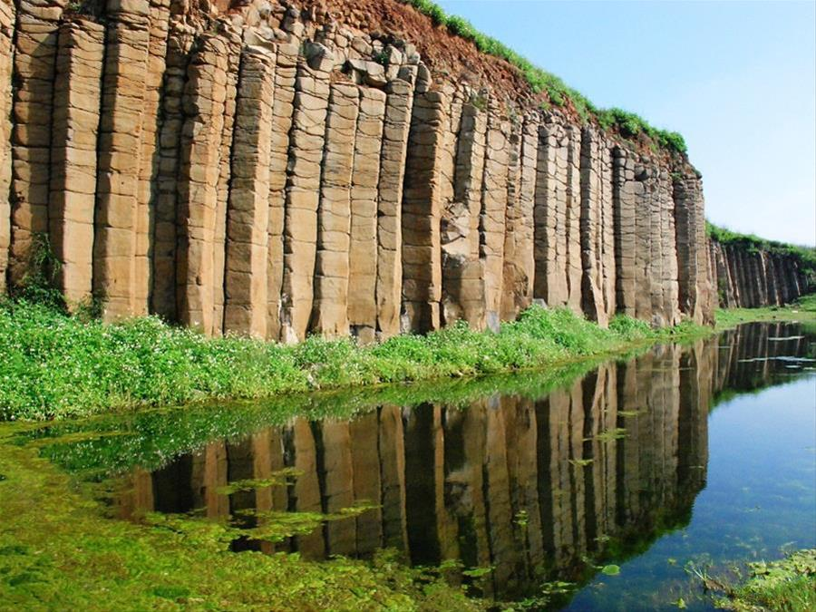

柱狀節理與板狀裂理
玄武岩熔岩在冷卻收縮時產生的張力，使岩石發生多角柱狀的破裂面就稱為節理。常可發現節理的發育所形成的粗大石柱，矗峙林立，圍成壯麗的海崖。
垂直的柱狀節理以小門嶼、西嶼、桶盤嶼、西吉嶼和七美島最為壯觀，彎曲的柱狀節理則見於白沙嶼、員貝嶼、貓嶼及七美島等地發生。柱狀玄武岩亦常見到水平的裂理，過去常稱為板狀節理或板狀裂理。
褶皺
岩層受到壓力推擠以後，會產生傾斜或呈波浪狀的彎曲所造成的現象即為褶皺。
褶皺的規模大小不等，最小的要在顯微鏡下才能看到，大的褶皺其波長可達十公里以上。褶皺地質可見於內垵、七美等地，以七美的龍埕最為明顯。
斷層
岩層受到壓力產生破裂後，若破裂面兩側的岩石發生相對的移動，這種破裂面稱為斷層面。澎湖地區較大規模的斷層面見於七美的東面斷崖。

連到第2頁
連到第3頁
連到第4頁